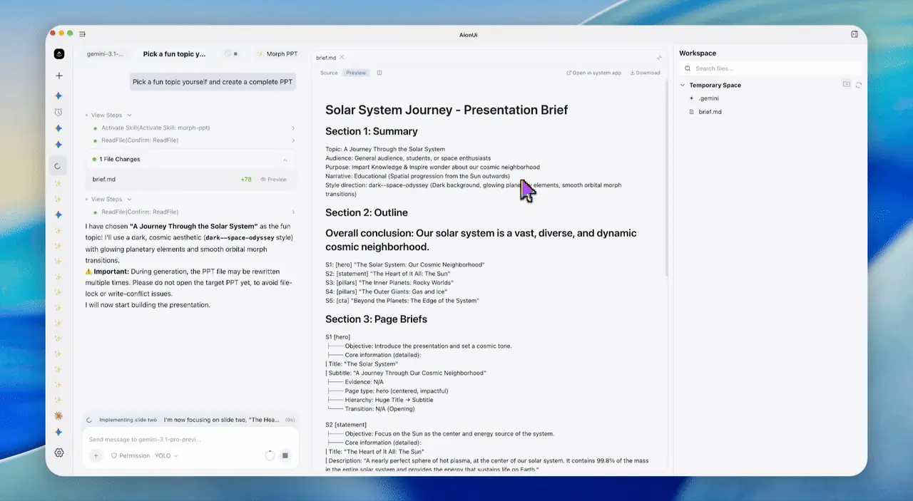
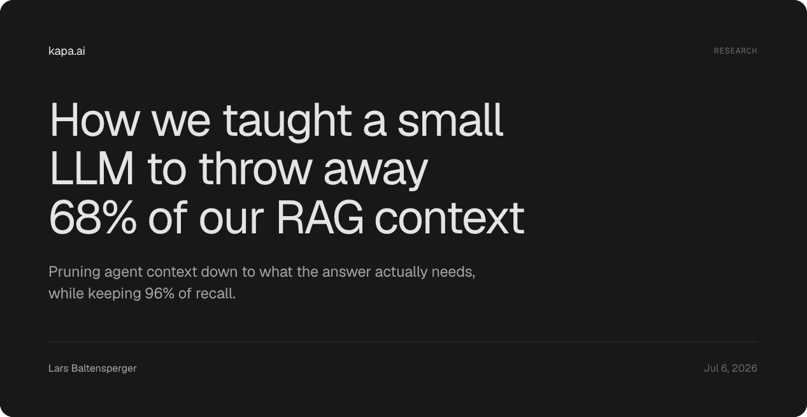

THE FRONT PAGE
EDITOR'S NOTE: As we substitute automated verification for standard rigor and mistake stochastic drift for software architecture, the modern engineer is increasingly reduced to auditing the machinery of their own displacement—yet the fundamental clarity of a well-constructed proof remains entirely ours to reclaim. #The tension between mathematical determinism and automated over-engineering.
Data suggests acquiring a second human language defers cognitive degradation by over a decade, presenting a biological counterpoint to our current obsession with outsourcing memory to external tokenizers. The underlying mechanism remains opaque, but the discipline required offers a rare, non-artificial defensive moat for the mind.
As language models increasingly function as centralized, global workspaces for enterprise logic, we trade deterministic codebases for opaque statistical context windows. The immediate risk is a further decay in software craft, where debugging requires vibes rather than verification, though it may force a needed return to rigorous input specification.
By shrinking embedding models to single-digit megabytes, Ternlight bypasses the network hop and server costs entirely. While running inference client-side reduces latency and respects user privacy, engineers will need to weigh the inevitable degradation in semantic nuance against the infrastructure savings.

By exposing Microsoft Office files directly to command-line execution, OfficeCLI bypasses the fragile UI-scraping layers often forced upon LLMs. It streamlines structured data extraction but inherits the inescapable complexity of parsing legacy enterprise document schemas.
By translating Rust code into mathematical constraints, Kani allows developers to prove the absence of specific bugs rather than just hoping their test suites find them. While it dramatically elevates the rigor of software craft, engineers must weigh the steep computation costs and the reality that model checking scales poorly with massive codebases.

Engineering teams are resorting to grading prompt chunks via LLM rubrics to strip out retrieval bloat, trading compute cycles upfront to prevent long-context models from drowning in their own noise. This approach reveals a persistent unease with raw semantic search, though substituting vector recall with a cascade of slower LLM judgments may only trade one flavor of unpredictable craft for another.
MODEL RELEASE HISTORY
No confirmed model releases were detected for this edition date.